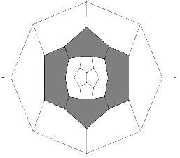

Elementary polycycles and Face regular maps
A (R,q)-polycycle is a plane graph,
whose faces, besides some disjoint holes, are i-gons for i in R,
and whose vertices, outside of holes, are q-valent.
Such polycycle is called elliptic, parabolic or
hyperbolic if 1/q + 1/r - 1/2
(where r is the maximum of R) is positive,
zero or negative, respectively.
Such polycycles can be uniquely decomposed into some simpler
elementary polycycles.
We classify the elementary elliptic (R,q)-polycycles,
i.e. elementary ({2,3,4,5},3)-, ({2,3},4)- and
({2,3},5)-polycycles.
This gives a very efficient proof and enumeration technique, which
we applied to the enumeration of face regular maps.
A 3-valent torus or spherical map with p- and q-gonal faces is called pRi (respectively qRj) if every p-gonal (respectively q-gonal) face is adjacent to exactly i p-gonal (respectively j q-gonal) faces.
We considered the question of existence, finiteness and classification for those classes of graphs.

A (5,8)-sphere 8R2
|

A (5,9)-sphere 9R0
|
|
L
M. Deza, M. Dutour, M. Shtogrin, Elementary elliptic (R,q)-polycycles, Analysis of Complex Networks, From Biology to Linguistics, edited by M. Dehmer, F. Emmert-Streib, Wiley-Blackwell, Weinheim 2009, 351--376.
L
M. Deza, M. Dutour Sikirić, Geometry of Chemical Graphs, Cambridge University Press, Series: Encyclopedia of Mathematics and its Applications (No. 119)
L
M. Deza, M. Dutour, M. Shtogrin, Elliptic polycycles with holes, Russian Math. Surveys. 60 (2005) 349--351
|